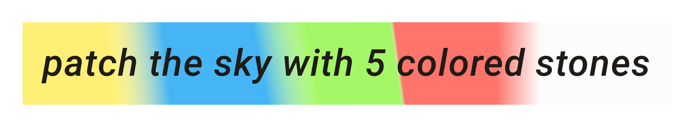
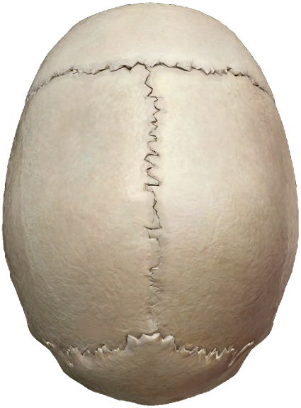
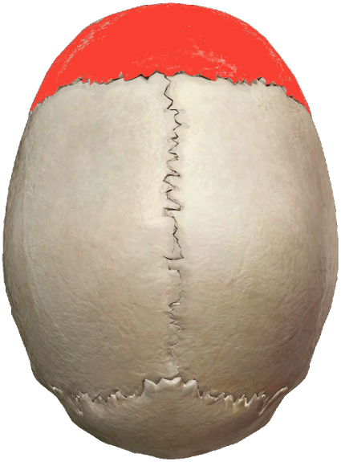
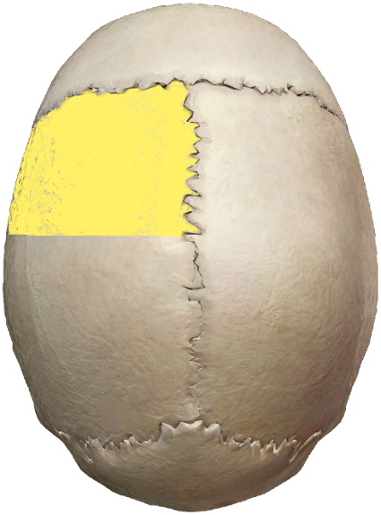
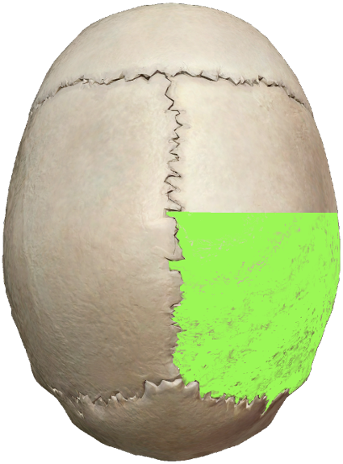
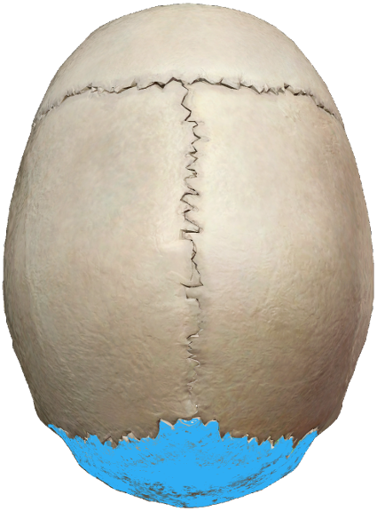
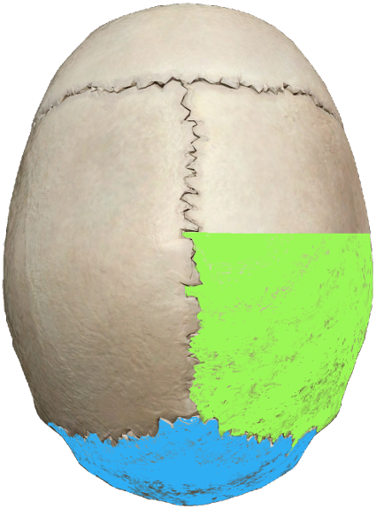
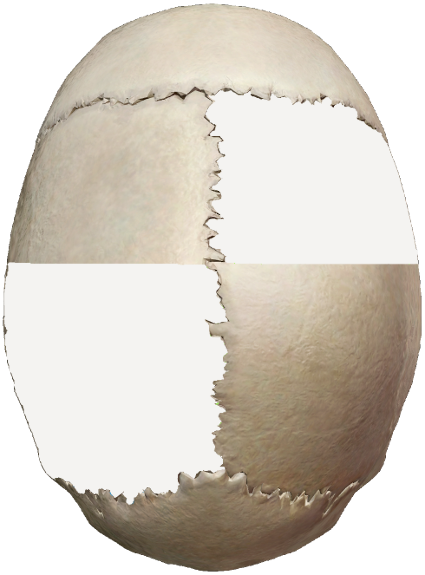
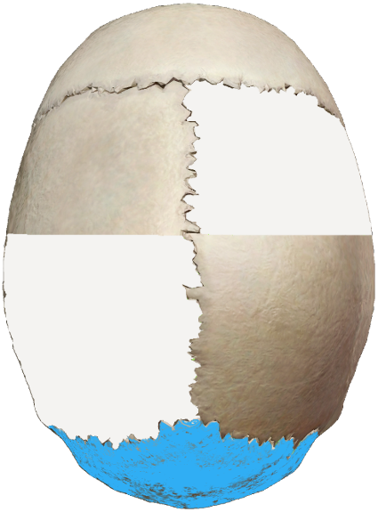
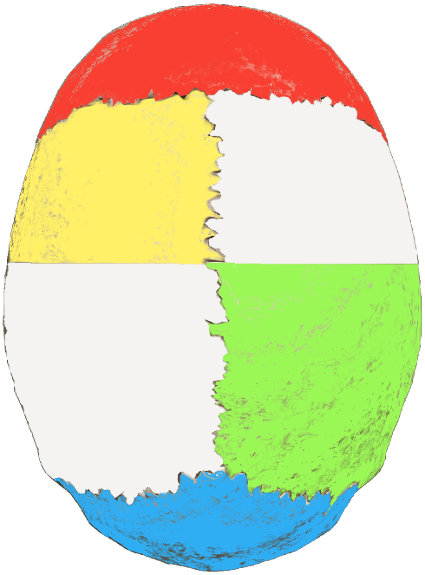

TIMELINE
2021
2020
2019
2018
2021
March
Feature Film - Trailer
2020
November
Introduction - excerpt from upcoming book
Within the Skull videos
24th - Melanie Maar Daria Faïn
17th - Christian Konrad Schröder
10th - Tuomas Laitinen
3rd - David Thomson
June - December
Collaborator Patches
January
13th - Live performance of Landing Sites at APAP conference
2019
December 7th
MR Festival Fall 2019: ComeUnion Workshops & Events
Live performance (Part 1)
Live performance (Part 2)
Post-show discussion
June-July
Saari Residency Archive
June 22th - Journal Entry #9
June - Journal Entry #10
June 27th - Journal Entry #11
June 30th - Journal Entry #12
July 1st - Journal Entry #13
July 2nd - Journal Entry #14
July 4th - Journal Entry #15
July 6th - Journal Entry #16
May
10th - Live performance #2 of Landing Sites at BKSD
February
Journal Entry #6, BksD
18th - Journal Entry #7
20th - Journal Entry #8
January
Journal Entry #5, Brooklyn
2018
December
Journal Entry #4, Vienna
November
Live performance #1 of Landing Sites at BKSD
Journal Entry #3, Zagreb
September
Journal Entry #1, BksD
Journal Entry #2, BksD
July
A conversation between Daria Faïn and choreographer Marjana Krajac









ABOUT